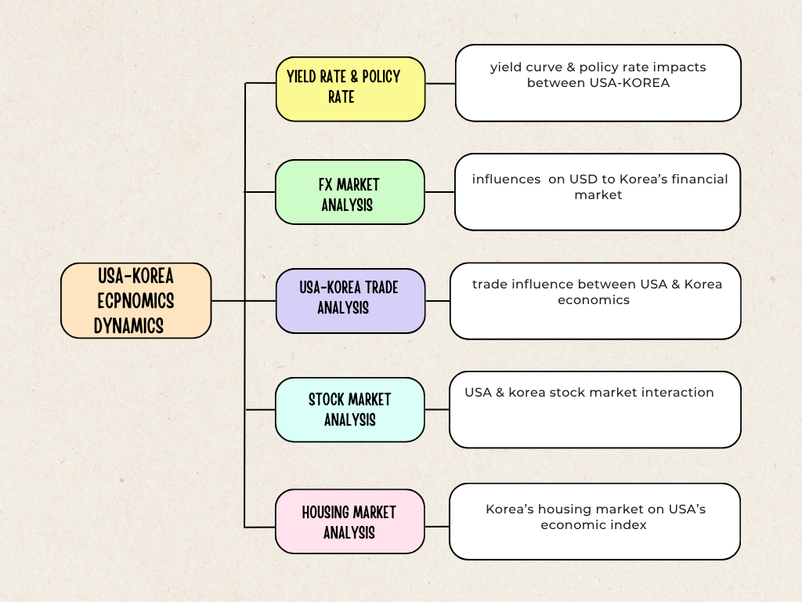

Introduction
Time series analyis in US economics influence on South korea’s economics
The United States is the world’s largest economy and, in many ways, the bellwether of global finance. When U.S. economic or political events unfold—rate decisions, inflation surprises, policy shocks—markets everywhere react. Countries tightly connected to the U.S. through trade, capital flows, and technology supply chains feel these ripples most acutely.
South Korea is a prime example. Its economy is deeply integrated with the U.S. through manufacturing-led exports, advanced technology industries, and financial linkages. U.S. shifts in growth, interest rates, and risk sentiment can quickly feed into Korea’s exchange rate, equity market, local interest rates, corporate financing conditions, and real activity. Korean policymakers and investors therefore watch the U.S. closely—adapting policy stances and portfolio strategies to absorb or harness these external forces.
This project explores how and how much U.S. ecomoics transmit to Korea’s economy and markets.This project focus on the dynamics : the channels of influence (rate differentials, dollar liquidity, risk appetite, growth signals), the speed and persistence of the effects, and how these relationships change across calm and stressed periods.
big picture
This project centers on how U.S. Treasuries—the world’s benchmark for risk-free returns—shape outcomes in Korea’s economy and markets. Treasury moves are not just bond-market trivia; they anchor rates, funding costs, and the global appetite for risk. When the U.S. curve shifts or policy guidance changes, the ripple travels quickly through the won–dollar exchange rate, Korean equities (KOSPI/KODEX), local interest rates and credit, and—after a lag—into the real economy via trade and housing. In short, U.S. rates transmit policy signals and real-economy shocks across markets; Korea, as an open, export-driven economy tightly linked to U.S. demand and capital, feels these waves early and often. By organizing evidence across FX, rates, market behavior, and real-side indicators, this project aims to builds a coherent narrative of how U.S. financial conditions connect to Korean financial and economic outcomes. The goal is to track how U.S. economic condition interacts with Korea’s economics, using a time-series workflow—aligning frequencies. This project will focus on five main ideas:
U.S. rate shocks & channels. U.S. Treasury moves embed changing views about policy, inflation, and growth. this project analyzes how these shocks reach Korea through interest-rate differentials, dollar liquidity/risk sentiment, and growth expectations—and when those channels amplify or offset one another.
FX: USD/KRW as the first responder. Because FX sits at the center of global pricing and funding, USD/KRW often reacts first. We map when U.S. rate spikes strengthen the dollar and weaken the won, when those moves act as risk-off signals, and how quickly (or slowly) the effects fade.
Korean yield curve & credit conditions. The KTB curve summarizes Korea’s borrowing costs and growth/inflation expectations. We examine how shifts in the U.S. curve pass through to KTB 3Y/10Y and credit spreads, identifying where transmission is sharp versus sticky, and how it differs across calm and stressed regimes.
Equities: KOSPI/KODEX sector leadership. Equities translate rate information into valuations and earnings expectations. We track how sector leadership changes when discount rates rise or fall, spotlighting moments when stocks confirm the message from rates—or contradict it.
Real-side spillovers: trade and housing. Financial impulses filter into activity with lags. We connect market shocks to export prices/volumes and housing prices/transactions, clarifying when higher rates and a stronger dollar translate into softer trade momentum or tighter real-estate financing—and when resilience shows up instead.
By the end, this project aims to turn these signals into clear, practical guidance: how U.S. Treasury dynamics move Korea’s FX, rates, equities, trade, and housing—and how that understanding can inform policy calibration and resilient portfolio construction.

Analytical Angels
US-Korea Yield & policy rate: U.S. Treasury yields in most cases lead global funding costs and shape risk sentiment. Korea’s yield curve, in turn, reflects how those global impulses meet local policy and liquidity conditions. This project analyzes how U.S. rate shifts whether policy, inflation, or term-premium driven transmit into Korean rates and the Korean won.
FX: FX sits at the center of global pricing and funding, often reacting first for economic shock. This project maps when U.S. rate spikes strengthen the dollar and weaken the won, when those moves act as risk-off signals, and how quickly (or slowly) the effects fade and links to change in various financial markets such as FX, Bonds.
Equities: Equities translate rate information into valuations and earnings expectations. This project tracks how leadership changes when rates rise or fall—testing when KOSPI co-moves with the US market and the dollar/risk complex, and spotlighting moments when stocks confirm the message from rates or contradict it.
Housing market :Housing market is one of the markets that is very sensitive to economic index. This project connects market shocks to export prices/volumes and housing prices/transactions, clarifying when higher rates and a stronger dollar translate into softer trade momentum or tighter real-estate financing.
Trade: Fundamentals in Korea’s economy relies on exports/imports. The trade channels global demand, dollar strength, and financing costs into shipment volumes and pricing. This project examines how USD strength and U.S.–Korea rate spreads affect export/imports when U.S. growth momentum offsets FX/risk.
Guiding Questions
How do U.S. Treasury yield changes transmit through Korea’s financial system (FX, rates, equities, credit)?
What is the best way to identify a U.S. rate shock — event-day surprises, residualized yields, or structural VAR identification?
What is the size of the pass-through elasticity between U.S. and Korean yields (e.g., dKTB3Y/dUST2Y, dKTB10Y/dUST10Y)?
Which Korean market reacts first and strongest to U.S. shocks, and what is the typical lag structure of these reactions?
How does the strength and speed of transmission vary across regimes — high VIX, Fed tightening cycles, or funding stress periods?
Do FX, rate, and equity responses move consistently after shocks, or do they diverge (e.g., rates up, stocks steady)?
How do U.S. financial shocks spill over into Korea’s real economy — exports, industrial production, and housing — over time?
Are U.S. rate hikes and cuts symmetric in their effects on Korea’s markets and economy?
What share of Korea’s financial-market volatility is explained by U.S. shocks versus domestic or regional factors?
What actionable signals should Korean policymakers and investors monitor — U.S. front-end policy, long-end term premium, or dollar liquidity indicators?
Literature reviews
- US–Korea yield & rate
Recent evidence shows US Treasury moves often lead other curves, with term-premium and expectations shocks radiating into global funding costs—consistent with the view that Korea’s KTB curve imports a sizable share of the US signal unless domestic policy/liquidity conditions push back (BIS, 2024)2. This motivates our decomposition of KTB moves into imported expectations vs local term-premium and our tests for wedge episodes when BoK priorities (growth/financial stability) resist external tightening.
- FX
New work from the Bank of Korea highlights the dollar’s outsized role in transmitting US financial shocks to small open economies, including Korea, via both trade invoicing and dollar funding channels (Bank of Korea, 2025)3. This supports our focus on mapping how US rate spikes strengthen the dollar, pressure the won, and cascade into local funding and asset prices—while testing state dependence (calm vs stressed) in the speed and persistence of KRW pass-through.
- Equities
The IMF’s 2025 Global Financial Stability Report documents elevated equity valuations alongside heightened sensitivity to rate and policy-uncertainty shocks, with correlations to long-rate moves rising in risk-on phases (IMF, 2025)4. This informs our approach to track when KOSPI co-moves with US equities and the dollar/risk complex—confirming the discount-rate channel—and when local earnings or sector dynamics generate divergence from the message embedded in rates.
- Housing market
The IMF’s 2024 Article IV for Korea, assesses housing affordability and interest-rate transmission, noting how tighter financial conditions and higher mortgage costs can weigh on transactions/prices even as some stabilization emerges (IMF, 2025)5. We use this to link imported rate/FX shocks to mortgage proxies, volumes, and prices, distinguishing quick volume effects from slower price adjustments and identifying thresholds where financing tightens materially.
- Trade
BIS research after 2023 emphasizes valuation effects under dominant-currency pricing: exchange-rate swings reshape firms’ cash flows and can outweigh classic expenditure-switching in the short run (Nookhwun et al., 2025)6. This frames our tests of how USD strength and US–Korea rate spreads filter into Korea’s export receipts and import bills—and when strong US growth offsets FX/risk headwinds for volumes and pricing.